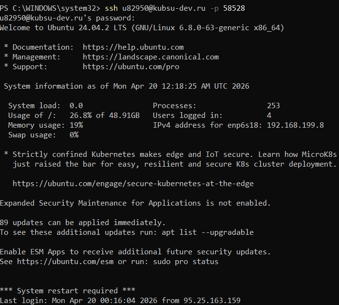
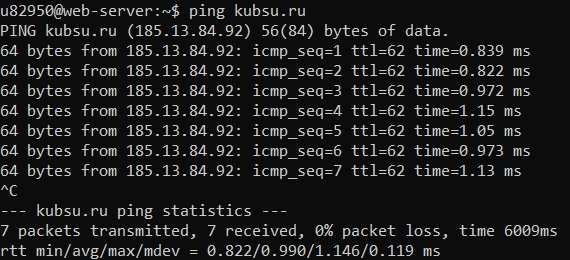
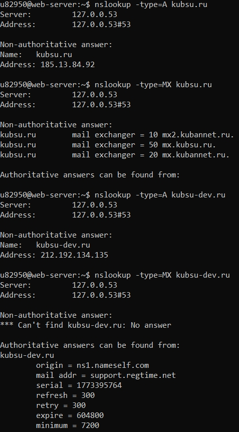
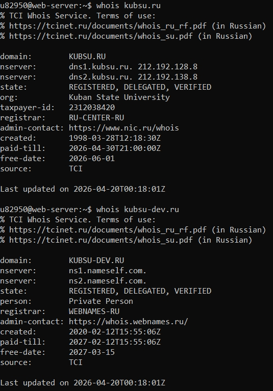
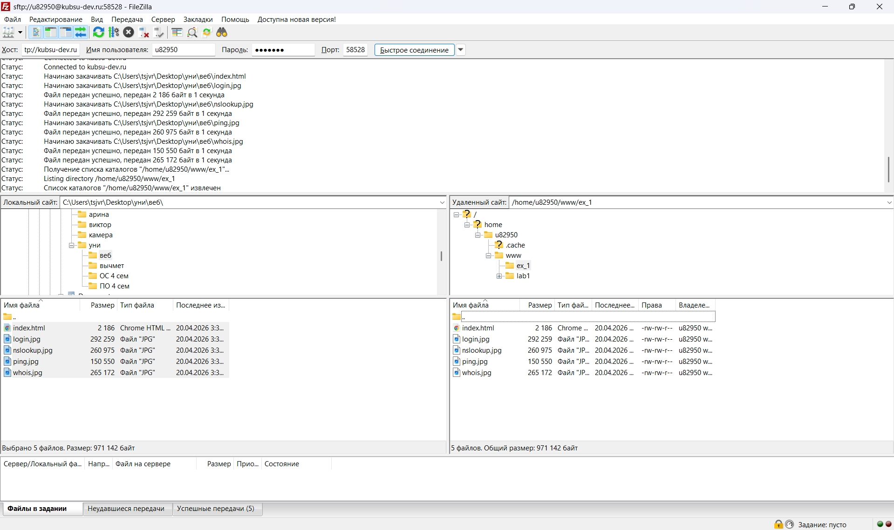

На данном этапе я подключилась к удалённому серверу kubsu-dev.ru с помощью протокола SSH. Для подключения я использовала команду с указанием нестандартного порта, так как стандартный порт 22 был недоступен. После ввода логина и пароля соединение было успешно установлено, что подтвердилось появлением командной строки сервера. Это означает, что я получила удалённый доступ к файловой системе сервера и могу выполнять дальнейшие задания. Данный шаг является основным, так как без подключения невозможно работать с сервером.

Далее я использовала команду ping для проверки доступности сайта kubsu.ru. Эта команда отправляет сетевые пакеты на сервер и показывает, отвечает ли он. В результате выполнения команды я получила ответы от сервера, что говорит о его доступности в сети. Также можно увидеть время отклика, которое показывает скорость соединения. Этот этап позволяет убедиться, что сайт работает и доступен по сети.

С помощью команды nslookup я получила информацию о доменных именах kubsu.ru и kubsu-dev.ru. В результате были определены IP-адреса (A-записи), которые соответствуют этим доменам. Также я выполнила запрос MX-записей, которые отвечают за почтовые серверы домена. Это позволяет понять, какие сервера обрабатывают электронную почту для данных доменов. Данный инструмент используется для анализа DNS и часто применяется при настройке сетей. A-запись используется для сопоставления доменного имени с IP-адресом сервера, на котором расположен сайт. MX-запись указывает почтовые серверы, которые обрабатывают электронную почту для данного домена. Их связь заключается в том, что MX-запись указывает на доменное имя почтового сервера, а уже у этого имени есть своя A-запись с IP-адресом.

На этом этапе я использовала команду whois для получения информации о регистрации доменов. В выводе команды содержатся данные о дате регистрации, владельце и регистраторе домена. Это позволяет узнать, когда был создан домен и кем он управляется. Я выполнила запрос для kubsu.ru и kubsu-dev.ru, чтобы сравнить их характеристики. Whois является важным инструментом для анализа доменных имён и используется в администрировании сетей.

Для загрузки файлов на сервер я использовала программу FileZilla по протоколу SFTP. Я подключилась к серверу, указав адрес, логин, пароль и порт. После подключения я открыла папку www/ex_1, которая используется для размещения веб-страниц. Затем я загрузила туда HTML-файл и скриншоты, перетащив их из локальной папки. Этот этап позволяет разместить сайт на сервере и сделать его доступным через браузер.
